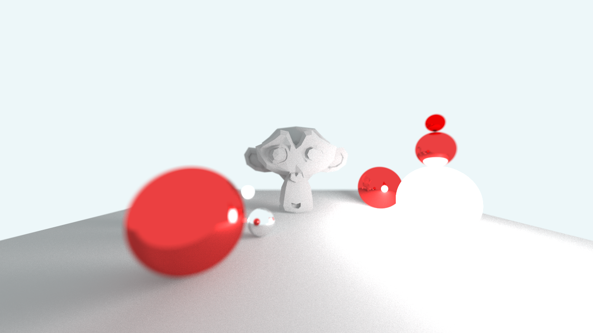
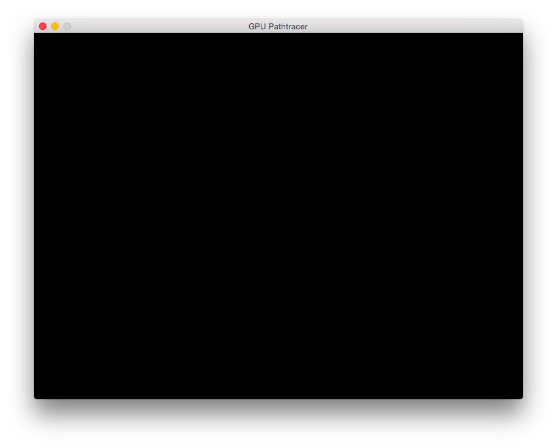
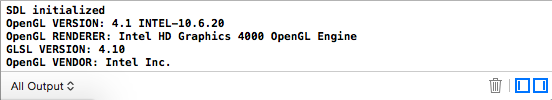
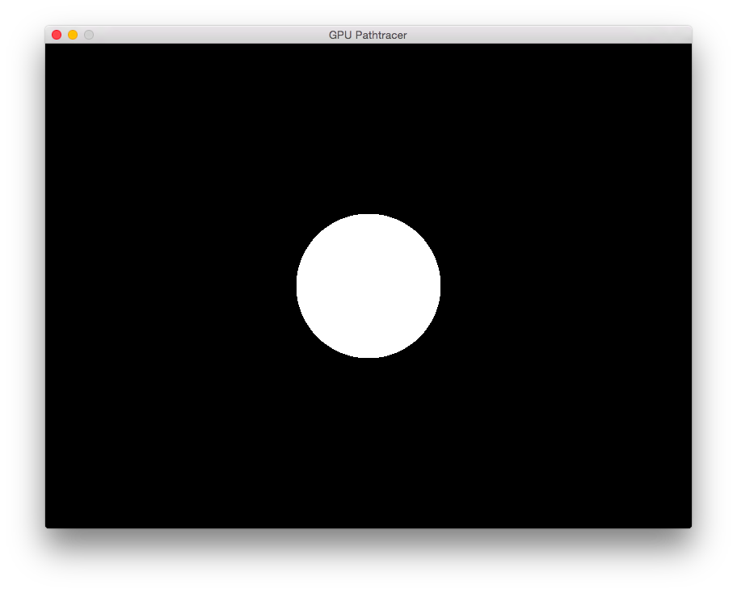

Vape is my OpenGL based renderer that currently supports only path tracing. The basic path tracing algorithm is to, for every pixel, shoot a ray into the scene and intersect geometry. The ray is recursively reflected in a direction based on the geometry's material. When it intersects a light, the color accumulated along the path is returned to the pixel. This is done thousands of times per pixel and averaged in order to reduce the noise generated by the randomness in the algorithm. GPU APIs including CUDA and OpenGL don't usually support recursion so this process must be done iteratively. Because path tracing is "embarrassingly parallel", it is an algorithm that is well suited for GPU implementation. Given this, the goal was to implement a simple path tracer in a GLSL fragment shader that is run on a full screen quad.
Vape's path tracer was implemented on top of a standard OpenGL renderer and because of this I could take advantage of the fact that I was already loading models into the application. Prior to OpenGL 4.3 the only way that I know of to get triangle data into the shader was by encoding it into textures and decoding it before use. But OpenGL 4.3 introduced a new feature called SSBOs that allowed me to basically take the arrays of vertex data and index data that I would be using for standard draw calls and to pass them directly into the path tracing shader. That way in my path tracing shader all I need to do is iterate over the index array and pull out vertices from the vertex array to build a triangle and then to pass that into a triangle intersection function.
The path tracer also has a few simple BRDFs. At present the only materials it supports are diffuse, perfect specular and emissive. Currently all of the models loaded from triangle meshes have to have the same material. This is because it is hardcoded into the shader. Eventually I would like to encode each models material type into its textures but before I do this I would like to implement a virtual texturing system. This would be mainly for the OpenGL renderer that the path tracer is running on top of but because they share resources, it could be used in the path tracer as well.
Another implemented feature is progressive rendering. This means that the renderer starts out with a rather noisy image and constantly refines it by taking more and more samples and averaging them into the samples taken before giving an image that gradually converges to the correct image. However, whenever the camera or any geometry or lights in the scene move, the path tracer must start over because all of its previous samples were based on the previous conditions. This is implemented by ping-ponging between two seperate framebuffers. Each framebuffer has two textures, one for the total color thats been accumulated for each pixel, and one for the gamma corrected average color of each pixel. The gamma corrected texture is then rendered to the full screen quad.
Some of the other features include super sampled anti aliasing, depth of field, motion blur, and rudimentary camera controls. In the future I'd like to add some more features and flesh out some of the features that are already implemented. These include some kind of spatial partitoning system, Fresnel, a more robust BRDF system, bidirectional path tracing, and the aforementioned virtual texturing.
First things first, we need to create the window and OpenGL context. The only library we're going to use is SDL and it will handle both of those. If you are using Windows you may also need GLEW. SDL and OpenGL are cross platform so other than the two or three lines of code to deal with GLEW, everything should be the same between Windows and OS X.
After including gl3.h and SDL.h (as well as GLEW on Windows) the first thing we're going to do is declare a few variables;
SDL_Window* window;
SDL_GLContext gl_context;
SDL_DisplayMode current;
SDL_Event event;
int width = 800;
int height = 600;
After this we need to initialize SDL and a OpenGL context and check what context was returned.
if(SDL_Init(SDL_INIT_EVERYTHING) < 0)
printf("SDL failed to initialize\n");
printf("SDL initialized\n");SDL_GL_SetAttribute(SDL_GL_CONTEXT_PROFILE_MASK, SDL_GL_CONTEXT_PROFILE_CORE );
SDL_GL_SetAttribute(SDL_GL_CONTEXT_MAJOR_VERSION, 4);
SDL_GL_SetAttribute(SDL_GL_CONTEXT_MINOR_VERSION, 0);
window = SDL_CreateWindow("GPU Pathtracer", SDL_WINDOWPOS_UNDEFINED, SDL_WINDOWPOS_UNDEFINED, width, height, SDL_WINDOW_SHOWN | SDL_WINDOW_OPENGL);
SDL_SetWindowPosition(window, 50, 50);
gl_context = SDL_GL_CreateContext(window);
if(gl_context == NULL)
printf("There was an error creating the OpenGL context.");
SDL_GL_MakeCurrent(window, gl_context);
SDL_GetWindowDisplayMode(window, ¤t);
printf("OpenGL VERSION: %s\n",glGetString(GL_VERSION));
printf("OpenGL RENDERER: %s\n",glGetString(GL_RENDERER));
printf("GLSL VERSION: %s\n",glGetString(GL_SHADING_LANGUAGE_VERSION));
printf("OpenGL VENDOR: %s\n\n",glGetString(GL_VENDOR));
After compiling and running this code you should see an empty window and bit of output displaying information about your OpenGL context and GPU. Its worth noting that although I requested a 4.0 context, my Macbook returned a 4.1 context. That is related to the fact that Apple controls the OpenGL spec on Macs and only allow up to 4.1. On Windows you will probably get back the context you requested as long as your graphics card supports a version higher that the version you requested. For example, my desktop pc supports up to OpenGL 4.5 but I request a 4.3 context and I get back a 4.3 context. As long as you get back a 4.0 or higher context, you should be fine with the rest of this tutorial.
 Maybe not the most exciting but it's a start.
The idea is to render a quad that covers the entire screen and thus each fragment generated by this quad will correspond to a pixel on screen. In the fragment shader we shoot a ray and intersect our scene and repeat. We'll also using ping-ponging to implement a progressive render. The scene will be represented by an array of spheres and a single quad for the ground that will be defined in the fragment shader. To do this we're gonna need a few more variables.
unsigned int pingpong_fbo0;
unsigned int pingpong_fbo1;
unsigned int pt_pingpong0;
unsigned int pt_pingpong1;
unsigned int pt_t_pingpong0;
unsigned int pt_t_pingpong1;
We declare the 2 frame buffers we'll be using for ping-ponging. Then 2 textures for each framebuffer where the one texture (pt_pingpong)is for the total accumulated color per pixel and the second (pt_t_pingpong) will store that number divided by the total number of samples and gamma corrected.
glGenFramebuffers(1, &pingpong_fbo0);
glBindFramebuffer(GL_FRAMEBUFFER, pingpong_fbo0);
glEnable(GL_TEXTURE_2D);
glGenTextures(1, &pt_pingpong0);
glBindTexture(GL_TEXTURE_2D, pt_pingpong0);
glTexParameteri( GL_TEXTURE_2D, GL_TEXTURE_MIN_FILTER, GL_LINEAR );
glTexParameteri( GL_TEXTURE_2D, GL_TEXTURE_MAG_FILTER, GL_LINEAR );
glTexParameterf(GL_TEXTURE_2D, GL_TEXTURE_WRAP_S, GL_CLAMP_TO_EDGE);
glTexParameterf(GL_TEXTURE_2D, GL_TEXTURE_WRAP_T, GL_CLAMP_TO_EDGE);
glTexImage2D(GL_TEXTURE_2D, 0, GL_RGBA32F, width, height, 0, GL_RGBA, GL_FLOAT, NULL);
glFramebufferTexture2D( GL_FRAMEBUFFER, GL_COLOR_ATTACHMENT0, GL_TEXTURE_2D, pt_pingpong0, 0 );
glGenTextures(1, &pt_t_pingpong0);
glBindTexture(GL_TEXTURE_2D, pt_t_pingpong0);
glTexParameteri( GL_TEXTURE_2D, GL_TEXTURE_MIN_FILTER, GL_LINEAR );
glTexParameteri( GL_TEXTURE_2D, GL_TEXTURE_MAG_FILTER, GL_LINEAR );
glTexParameterf(GL_TEXTURE_2D, GL_TEXTURE_WRAP_S, GL_CLAMP_TO_EDGE);
glTexParameterf(GL_TEXTURE_2D, GL_TEXTURE_WRAP_T, GL_CLAMP_TO_EDGE);
glTexImage2D(GL_TEXTURE_2D, 0, GL_RGBA32F, width, height, 0, GL_RGBA, GL_FLOAT, NULL);
glFramebufferTexture2D( GL_FRAMEBUFFER, GL_COLOR_ATTACHMENT1, GL_TEXTURE_2D, pt_t_pingpong0, 0 );
GLenum pingpong0_draw_buffs[] = {GL_COLOR_ATTACHMENT0, GL_COLOR_ATTACHMENT1};
glDrawBuffers(2, pingpong0_draw_buffs);
GLenum status = glCheckFramebufferStatus(GL_FRAMEBUFFER);
printf("Pingpong frameBuffer 0 status: 0x%x, 0x8cd5 is complete\\n", status);
glBindFramebuffer(GL_FRAMEBUFFER, 0);
This bit of code is just pretty standard framebuffer object setup. It should be done just after initializing SDL. Here we're generating the fbo and textures that will be attached to them. Then, we configure the framebuffer and check its status to determine if there was an error. Note we don't need a depth texture because there no depth test are necessary. We only have the single screen space quad that is all at the same depth with no overlaps. Also note the use of GL_RGBA32F. This is necessary because after a few frames of accumulated color, the value of the total accumulation will exceed 1.0 and if not using GL_RGBA32F the value will be clamped to 1.0.
The code above only sets up a single framebuffer so you will need to repeat this with the second fbo and texture handle. The one difference is that we initialize the textures with data. We need to make sure that these textures are initialized with 0 across the board so that when we sample it in the shader to accumulate color we dont want it to have garbage data that will get pulled into the accumulated color.
float* data = (float*)malloc(height * width * 4 * sizeof(float));
GLubyte val = 0;
for(int i = 0; i < height * width * 4; i++){
data[i] = val;
}
...
glTexImage2D(GL_TEXTURE_2D, 0, GL_RGBA32F, width, height, 0, GL_RGBA, GL_FLOAT, &data[0]);
So make an array of floats to init the texture and replace the glTexImage2D from the first texture set up with this new one that includes the array we've just made. After that we will need to declare a few new variables. First the coordinates that define the corners of the screen space quad followed by its texture coordinates.
unsigned int ss_vbo;
unsigned int ss_st;
unsigned int ss_vao;
float ss_quad_pos[] = {
-1.0, -1.0,
1.0, -1.0,
1.0, 1.0,
1.0, 1.0,
-1.0, 1.0,
-1.0, -1.0
};
float ss_quad_st[] = {
0.0, 0.0,
1.0, 0.0,
1.0, 1.0,
1.0, 1.0,
0.0, 1.0,
0.0, 0.0
};
First the handles to the vertex buffer object, texture coordinates and vertex array object for the screen space quad. Then the coordinates that define the corners of the screen space quad followed by its texture coordinates.
glGenBuffers(1, &ss_vbo);
glBindBuffer(GL_ARRAY_BUFFER, ss_vbo);
glBufferData(GL_ARRAY_BUFFER, 12 * sizeof(float), &ss_quad_pos, GL_STATIC_DRAW);
glGenBuffers(1, &ss_st);
glBindBuffer(GL_ARRAY_BUFFER, ss_st);
glBufferData(GL_ARRAY_BUFFER, 12 * sizeof(float), &ss_quad_st, GL_STATIC_DRAW);
glGenVertexArrays(1, &ss_vao);
glBindVertexArray(ss_vao);
glBindBuffer(GL_ARRAY_BUFFER, ss_vbo);
glVertexAttribPointer(0, 2, GL_FLOAT, GL_FALSE, 0, NULL);
glEnableVertexAttribArray(0);
glBindBuffer(GL_ARRAY_BUFFER, ss_st);
glVertexAttribPointer(1, 2, GL_FLOAT, GL_FALSE, 0, NULL);
glEnableVertexAttribArray(1);
Next we initialize the screen space quad in the same way we would initialize any geometry in OpenGL. Just standard GenBuffers, BindBuffers, and VertexAttribPointer.
Lastly for out init function we need to set up our shaders.
unsigned int pt_program;
unsigned int ss_program;
const char* pt_vs = "";
const char* pt_fs = "";
const char* ss_vs = "";
const char* ss_fs = "";
We are going to need handles for the path tracing shader and the screen space shader to take our path traced image and put it on screen. We'll also declare our shaders asempty strings that we eventually replace with the actual code.
pt_program = compile_shader(pt_vs, pt_fs);
ss_program = compile_shader(ss_vs, ss_fs);
Then we call a function that will create the shader from the init function.
unsigned int compile_shader(const char* v_source, const char* f_source){
int vs_status = -1;
int fs_status = -1;
unsigned int vs = glCreateShader (GL_VERTEX_SHADER);
glShaderSource (vs, 1, &v_source, NULL);
glCompileShader (vs);
glGetShaderiv(vs, GL_COMPILE_STATUS, &vs_status);
if(vs_status != GL_TRUE){
int length;
char buffer[1000];
glGetShaderInfoLog(vs, sizeof(buffer), &length, buffer);
printf("Vertex Shader ID:%i OpenGL Shader Compile Error at %s", vs, buffer);
printf("Vertex Shader ID:%i OpenGL Shader Compile Error at %s", vs, buffer);
}
unsigned int fs = glCreateShader (GL_FRAGMENT_SHADER);
glShaderSource (fs, 1, &f_source, NULL);
glCompileShader (fs);
glGetShaderiv(fs, GL_COMPILE_STATUS, &fs_status);
if(fs_status != GL_TRUE){
int length;
char buffer[1000];
glGetShaderInfoLog(fs, sizeof(buffer), &length, buffer);
printf("Fragment Shader ID:%i OpenGL Shader Compile Error at %s\\n", fs, buffer);
printf("Fragmemt Shader ID:%i OpenGL Shader Compile Error at %s\\n", fs, buffer);
}
unsigned int program = glCreateProgram ();
glAttachShader (program, fs);
glAttachShader (program, vs);
glLinkProgram(program);
glDeleteShader(vs);
glDeleteShader(fs);
return program;
}
void draw_to_screen(unsigned int vao, unsigned int texture){
⇥glActiveTexture (GL_TEXTURE0);
⇥glBindTexture (GL_TEXTURE_2D, texture);
⇥glUseProgram(debug_program);
⇥glUniform1i(glGetUniformLocation(debug_program,"input_texture"),0);
⇥glBindVertexArray(vao);
⇥glDrawArrays(GL_TRIANGLES, 0, 6);
}
With that, all of the init code is done, but before we can write the main rendering loop we need to write an input function that will return a boolean so that we can use it as the expression of the main rendering while loop and kick out of the loop when the escape key is pressed.
int input(){
int exit = 1;
while(SDL_PollEvent(&event)){
if(event.type == SDL_KEYDOWN event.key.keysym.sym == SDLK_ESCAPE){
exit = 0;
}
}
return exit;
}
int main(){
framecount = 0;
init();
while(input()){
}
return 0;
}
The first thing we need to do in the main function is set the framecount variable to 0 and call the init function to set up everything. Follow this with the while loop that will do all the rendering with the input functions returned value as the condition.
int input(){
int exit = 1;
while(SDL_PollEvent(&event)){
if(event.type == SDL_KEYDOWN event.key.keysym.sym == SDLK_ESCAPE){
exit = 0;
}
}
return exit;
}
There isn't anything unique in terms of SDL input.... Now that the init and the input are complete, the only thing left in the C code is the main rendering loop.
int main(){
framecount = 0;
init();
while(input()){
}
return 0;
}
The first thing we need to do in the main function is set the framecount variable to 0 and call the init function to set up everything. Follow this with the while loop that will do all the rendering with the input functions returned value as the condition.
if(framecount%2 == 0){
glBindFramebuffer(GL_FRAMEBUFFER, pingpong_fbo0);
glClear (GL_COLOR_BUFFER_BIT | GL_DEPTH_BUFFER_BIT);
glViewport(0, 0, width, height);
float cam_pos[3] = {cam_x, cam_y, cam_z};
glUniform3fv(glGetUniformLocation(pt_program,"cam_pos"),1, cam_pos);
glUniform1i(glGetUniformLocation(pt_program, "width"), width);
glUniform1i(glGetUniformLocation(pt_program, "height"), height);
glUniform1i(glGetUniformLocation(pt_program, "frame_count"), framecount);
glActiveTexture (GL_TEXTURE0);
glBindTexture (GL_TEXTURE_2D, pt_t_pingpong1);
glUniform1i(glGetUniformLocation(pt_program,"accumulated"),0);
glDrawArrays(GL_TRIANGLES, 0, 6);
glBindFramebuffer(GL_FRAMEBUFFER, 0);
glClear (GL_COLOR_BUFFER_BIT | GL_DEPTH_BUFFER_BIT);
ss_render(ss_vao, pt_pingpong0);
SDL_GL_SwapWindow(window);
}else{
glBindFramebuffer(GL_FRAMEBUFFER, pingpong_fbo1);
glClear (GL_COLOR_BUFFER_BIT | GL_DEPTH_BUFFER_BIT);
glViewport(0, 0, width, height);
float cam_pos[3] = {cam_x, cam_y, cam_z};
glUniform3fv(glGetUniformLocation(pt_program,"cam_pos"),1, cam_pos);
glUniform1i(glGetUniformLocation(pt_program, "width"), width);
glUniform1i(glGetUniformLocation(pt_program, "height"), height);
glUniform1i(glGetUniformLocation(pt_program, "frame_count"), framecount);
glActiveTexture (GL_TEXTURE0);
glBindTexture (GL_TEXTURE_2D, pt_t_pingpong0);
glUniform1i(glGetUniformLocation(pt_program,"accumulated"),0);
glDrawArrays(GL_TRIANGLES, 0, 6);
glBindFramebuffer(GL_FRAMEBUFFER, 0);
glClear (GL_COLOR_BUFFER_BIT | GL_DEPTH_BUFFER_BIT);
draw_to_screen(ss_vao, pt_pingpong1);
SDL_GL_SwapWindow(window);
}
framecount++;
This is the code that does the ping-ponging. We start with an if statement to determine whether the frame to be renderered is even or odd. This determines which pingpong framebuffer is going to provide the input texture and which one is going to be for output. Then, we clear the bind one of the pingpong framebuffer we made to draw to and clear it. Then we bind all of the uniforms that we will need in the shader. After that we bind the texture associated with the other pingpong framebuffer to texture unit 0 so that we can use it as a sampler uniform. Then we call glDrawArrays to draw the screenspace quad. The pt_vs and pt_fs vertex and fragment shaders will run on this quad with the ray tracing being done in the fragment shader. After this we bidn teh default framebuffer so that we can draw to the screen and clear it. Then we call the draw_to_screen function to draw the texture we just rendered to to the scren and swap buffers to display what was rendered to the default framebuffer. The else block is essentially the same as the if block with the exception of the fact that all the references to the first pingpong buffer are replaced with references to the second pingpong buffer and vice_versa. After all of the drawing is done we increment the frame counter and re-enter the rendering loop.
That's it for the C code involved in writing a GLSL ray tracer. At this point if you ran the application it would still be a black screen. Now all thats left are the shaders.
const char* ss_vs =
"#version 400\n"
"layout(location = 0)in vec2 vpos;"
"layout(location = 1)in vec2 st;"
"out vec2 o_st;"
"void main(){"
" o_st = st;"
" gl_Position = vec4(vpos, -0.2, 1.0);"
"}";
const char* ss_fs =
"#version 400\n"
"in vec2 o_st;"
"uniform sampler2D input_texture;"
"out vec4 frag_colour;"
"void main () {"
" frag_colour = texture(input_texture, o_st);"
"}";
const char* pt_vs =
"#version 400\n"
"layout(location = 0)in vec2 vpos;"
"layout(location = 1)in vec2 st;"
"smooth out vec2 o_st;"
"void main(){"
" o_st = st;"
" gl_Position = vec4(vpos, 0.0, 1.0);"
"}">;
The vertex and fragment shaders used for draw_to_screen and the vertex shader for ray tracing are very simple. Both vertex shaders simply take in the postions and texture coords of our full screen quad and output the texture postions that will be interpolated for the fragment shader as well as the mandatory gl_Position. The draw_to_screen fragments shader(ss_fs) takes the interpolated texture coordinate and samples from the texture passed in as a uniform. This will just out put that texture to whatever framebuffer is bound.
const char* pt_fs =
"#version 400 core\n"
"const float INFINITY = 1e10;"
"in vec2 o_st;"
"uniform int width;"
"uniform int height;"
"uniform int frame_count;"
"uniform vec3 cam_pos;"
"uniform sampler2D accumulated;"
"layout(location = 0)out vec4 gc_color;"
"layout(location = 1)out vec4 t_color;"
"struct Sphere{"
" vec3 center;"
" float radius;"
"};"
//construct array of spheres
"Sphere sph[1];"
"}";
All the real ray tracing work happens in the pt_fs shader. First thing we need to do is get our variables out of the way. First is the constant variable INFINITY. It is effectively our boundary value that we compare all intersections to. If an intersection test returns a distance less than that then it is in the scene and if it returns INFINITY then the ray missed everything. Following that is the o_st variable that represents the coordinates of the pixel. They are interpolated from the vertex shader. This is followed by the uniforms. The height and width are the resolution. The frame_count is the number of the frame which is currently being rendered. It will be used as a seed in a pseudo random number generator but this won't come into play until the next part of the tutorial. The cam_pos variable is the position of the camera in world space. And lastly, accumulated is a texture that we'll be sampling to determine the total color that that pixel has accumulated so far. We also won't be using this until the next tutorial as well. The last variables that we'll be defining are a struct to represent the spheres that we'll be rendering and an array of these spheres.
"float intersect_sphere(vec3 ro, vec3 rd, Sphere sph, float closest_hit){"
" vec3 rc = ro - sph.center;"
" float c = dot(rc, rc) - (sph.radius * sph.radius);"
" float b = dot(rd, rc);"
" float d = b*b - c;"
" float t = -b - sqrt(abs(d));"
" if (d < 0.0 || t < 0.0 || t > closest_hit) {"
" return INFINITY;"
" }else {"
" return t;"
" }"
"}"
"float intersect_spheres(vec3 ro, vec3 rd){"
" float hit;"
" float closest;"
" closest = INFINITY;"
" for(int i = 0; i < sph.length(); i++){"
" hit = intersect_sphere(ro, rd, sph[i], INFINITY);"
" if(hit < closest)"
" closest = hit;"
" }"
" return closest;"
"}"
"float intersect_scene(vec3 ro, vec3 rd){"
" float sph = intersect_spheres(ro, normalize(rd));"//closest sphere intersection
" return sph;"
"}"
The next thing we'll need are the sphere intersection functions. Starting from the bottom, the first function is intersect_scene. It takes a ray origin and direction as parameters. It is little bare bones at the moment and is just getting a value from another function and returning it. This is a little pointless right now but later, if you wanted to add in a function for polygon intersection on top of the sphere intersection, this is where you would do it. You would call intersect_spheres and save the closest returned hit and call intersect_triangles and save the closest returned hit and compare them to determine which is truly the closest hit on that ray.
The next function up, intersect_spheres, is called by the previous function and simply iterates over all the spheres and calls a function to intersect the ray with the spheres and determine which is the closest intersection.
The last sphere intersection function is called by the previous function and does the actual intersection test between a single ray and a single sphere.
"void build_spheres(){"
" sph[0].center = vec3(0.0, 0.0, 0.0);"
" sph[0].radius = 1.0;"
"}"
The final function before the main function is a simple function to set up all the spheres to be rendered. It defines a center and radius per sphere. In this case it is only a single sphere but later on once the rest of the code has been built, it will be more. This function can also be used for materials once a materials system is added in. This may be added in a later part of the tutorial.
"void main(){"
" build_spheres();"
" vec2 resolution = vec2(width, height);"
" vec3 col = vec3(0.0);"
" vec2 p = (-resolution + 2.0*(gl_FragCoord.xy )) / resolution.y;"
//camera variables and ray origin
" vec3 ro = cam_pos;"
" vec3 rd = normalize(vec3(p, -1.0));"
" float hit = intersect_scene(ro, normalize(rd));"//intersect scene
" if(hit < INFINITY){"
" col = vec3(1.0);"
" }else{"
" col = vec3(0.0);"
" }"
" t_color = vec4(col, 1.0);"
" gc_color = vec4(col, 1.0);"
"}"
The last thing for the fragment shader is the main function. We start by calling the build_spheres function we just wrote to place the spheres into the world. In this case it is only a single sphere. Then get the gl_FragCoord coordinates of the pixel and scale it from it being 0 to 1 to being -1 to +1. Following that we set all the camera variables. The ray origin, ro, is set to the camera's postition and the ray direction is set towards the world space origin because that is where the sphere is located. If the output is set to this value you should get four colors intersecting near the middle of the screen like above. Its a little bit of a hardcoded solution right now but the purpose of this tutorial is to get a ray tracer up and running. A more robust solution will be added in a later tutorial. Then we call the intersct scene fuction to determine if the ray starting at this pixel will intersect any geometry and save the returned value as a float. The if else statement following this is basically for debugging purposes. It sets the color to black if the ray hit nothing and returned INFINITY and sets the color to white if the returned value is less than infinity, which indicated that an intersection has occured. Then the output fragment color for both the gamma corrected texture and the total accumulated texture are set to the color. This is just for now; in the next tutorial the texture corresponding to t_color will store the total accumulated color. But for now we can just spit out the same color to both textures.
And with that, the ray tracer is working and part one of this tutorial is done. It may be a little visually unimpressive at this point but it is in fact tracing rays and intersecting geometry. And taking the ray tracing and extending it to be able to handle path tracing iteratively is comparatively easy. But that will be covered in part 2.
Here's the source.